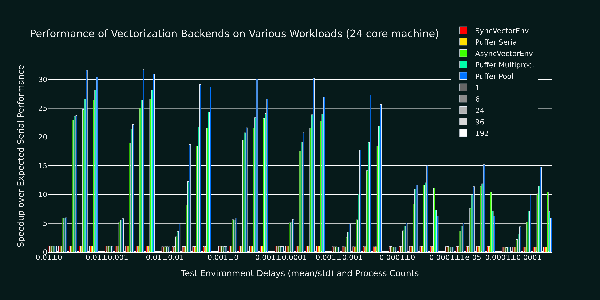

PufferLib 0.5: A Bigger EnvPool for Growing Puffers
This is what reinforcement learning does to your CPU utilization:
With PufferLib 0.5, we are releasing a Python implementation of EnvPool to solve this problem. TL;DR: ~20% performance improvement across most workloads, up to 2x for complex environments, and native multiagent support.
If you just want the enhancements, you can pip install -U pufferlib. But if you’d like to see a bit behind the curtain, read on!
The Simulation Crisis
You want to do some RL research, so you install Atari. Say it runs at 1000 steps/second on 1 core and 5000 steps/second on 6 cores. Now, you decide you want to work on a more interesting environment and happen upon Neural MMO, a brilliant project that must have been developed by a truly fantastic team. It runs at 1500 steps/second – faster than Atari! So you scale it up to 6 cores and it runs at … 1800 steps per second. What gives?
The problem is that environments simulated on different cores do not run at the same speed. Even if they did, many modern CPUs have cores that run at different speeds. Parallelization overhead is mostly the sum of:
- Launching/synchronization overhead. This is roughly 0.1 ms per process and is linear in the number of processes. At ~100 steps per second, you can ignore it. At >10,000 steps/second, it is the main limiting factor.
- Environment variance. This is defined by the ratio mu/std of the environment simulation time and scales with the square root of the number of processes. For 24 processes, 10% std is 20% overhead and 100% std is 300% overhead.
- Different core speeds. Many modern CPUs, especially Intel desktop series processors, feature additional cores that are ~20% slower than the main cores.
- Model latency. This is the time taken to transfer observations to GPU, run the model, and transfer actions to CPU. It is not technically part of multiprocesssing overhead, but naive implementations will leave CPUs idle during model inference.
As a rule of thumb, simple RL environments have < 10% variance because the code is always simulating roughly the same thing. Complex environments, especially ones with variable numbers of agents, can have > 100% variance because different code runs depending on the current state. On the other hand, if your environment has 100 agents, you are effectively running 100x fewer simulations for the same data, so launching/synchronization overhead is lower.
The Solution
Run multiple environments per process if you have > ~2000 sps environment with variance < ~10%. This will reduce the impact of launching/synchronization overhead and also reduces variance because you are summing over samples. In PufferLib, we typically enable this only for environments > ~5000 sps because of interactions with the optimizations below.
Simulate multiple buffers of environments so that one buffer is running while your model is processing observations from the other. This technique was introduced by https://github.com/alex-petrenko/sample-factory and does not speed up simulation, but it allows you to interleave simulations from two sets of environments. It’s a good trick, but it is superseded by the final optimization, which is faster and simpler.
Run a pool of environments and sample from the first ones to finish stepping. For example, if you want a batch of 24 observations, you might run 64 environments. At each step, the 24 for which you have computed actions are going to take a while to simulate, but you can still select the fastest 24 from the other 64-24=40 environments. This technique was introduced by https://github.com/sail-sg/envpool and is massively effective, but the original implementation is only for specific C/C++ environments. PufferLib’s implementation is in Python, so it is slower, but it works for arbitrary Python environments and includes native multiagent support.
Experiments
To evaluate the performance of different backends, I am using a 13900k (24 cores) on a max specced Maingear desktop running a minimal Debian 12 install. We test 9 different simulated environments: 1e-2 to 1-4 mean delay with 0-100% delay std. For each environment, we spawn 1, 6, 24, 96, and 192 processes for each backend tested (Gymnasium’s and Pufferlib’s serial and multiprocessing implementations + Pufferlib’s pool). We also have Ray implementations compatible with our pooling code, but that will be a separate post. Additionally, PufferLib implementations sweep over (1, 2, 4) environments per process and PufferLib pool will compute 24 observations at a time. We do not consider model latency, which can yield another 2x relative performance for pooling on specific workloads.

9 groups of bars, each for one environment. 5 groups of bars per environment, each for a specific number of processes. The serial Gymasium/PufferLib experiments match in all cases. The best PufferLib settings are 10-20% faster than the best Gymasium settings for all workloads and can be up to 2x faster for environments with a high standard deviation in important cases (for instance, you may not want to run 192 copies of heavy environments). Again, this is before even considering the time saved by interleaving with the model forward pass.
All of the implementations start to dip ~10% at 1,000 steps/second and ~50% at 10,000 steps/second. To make absolutely sure that this overhead is unavoidable, I reimplemented the entire pool architecture as minimally as possible, without any of the environment wrapper or data transfer overhead:
SPS: 10734.36 envs_per_worker: 1 delay_mean: 0 delay_std: 0 num_workers: 1 batch_size: 1 sync: False SPS: 11640.42 envs_per_worker: 1 delay_mean: 0 delay_std: 0 num_workers: 1 batch_size: 1 sync: True SPS: 32715.65 envs_per_worker: 1 delay_mean: 0 delay_std: 0 num_workers: 6 batch_size: 6 sync: False SPS: 27635.31 envs_per_worker: 1 delay_mean: 0 delay_std: 0 num_workers: 6 batch_size: 6 sync: True SPS: 22681.48 envs_per_worker: 1 delay_mean: 0 delay_std: 0 num_workers: 24 batch_size: 6 sync: False SPS: 26183.73 envs_per_worker: 1 delay_mean: 0 delay_std: 0 num_workers: 24 batch_size: 24 sync: False SPS: 30120.75 envs_per_worker: 1 delay_mean: 0 delay_std: 0 num_workers: 24 batch_size: 6 sync: True
As it turns out, Python’s multiprocessing caps around 10,000 steps per second per worker. There is still room for improvement by running more environments per process, but at this speed, small optimizations to the data processing code start to matter much more.
Technical Details and Gotchas
PufferLib’s vectorization library is extremely concise – around 800 lines for serial, multiprocessing, and ray backends with support for PufferLib’s Gymnasium and PettingZoo wrappers. Adding envpool only required changing around 100 lines of code but required a lot of performance testing:
- Don’t use multiprocessing.Queue. There’s no fast way to poll which processes are done. Instead, use multiprocessing.Pipe and poll with selectors. I have not seen noticeable overhead from this in any of my tests.
- Don’t use time.sleep(), as this will trigger context switching, or time.time(), as this will include time spent on other processes. Use time.process_time() if you want an equal slice per core or count to ~150M/second (time it on your machine) if you want a fixed amount of work.
The ray backend was extremely easy to implement thanks to ray.wait(). It is unfortunately too slow for most environments, but I wish standard multiprocessing used the Ray API, if not the architecture. The library itself has some cleanup issues that can cause crashes during heavy performance tests, which is why results are not included in this post.
There’s one other thing I want to mention for people looking at the code. I was doing some experimental procedural stuff testing different programming paradigms, so the actual class interfaces are in __init__. It’s pretty much equivalent to one subclass per backend.